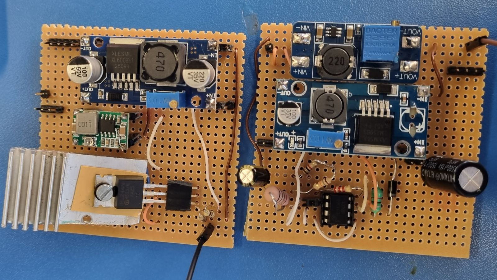

Engineering System Design — Southern Ocean Carbon Sensor
2026's theme was polar exploration through engineering design. My team of four worked with Dr Sandy Thomalla from UCT's Oceanography department, who needed a device to collect high-resolution, long-term carbon flux data in the Southern Ocean for environmental and oceanographic modelling — built to a R2000 budget and a 12-week timeline, with locally sourced parts.
The system split into four black-box subsystems: sensing (light-signal transmission and reception as a proxy for particulate organic carbon), mechanical (housing, wiper mechanism, motorised shutter), control & post-processing (switching, temperature sensing, data logging), and power — my subsystem. I designed for a 3S1P 12.6V rechargeable battery with per-cell monitoring, regulated 3.3V, 5V, +12V and −12V rails at 5% accuracy across defined load ranges, and a MOSFET-based switch drawing under 20 µA when off while handling 1.5A peak when on — all fit onto a 65×65 mm veroboard for under R500.